Cross-Validation Results: Automatic Report and Interpretation
Metrics by Fold
| Fold |
R2 |
MSE |
RMSE |
MAE |
| 1 |
-0.564800 |
1189.567143 |
34.490102 |
27.457143 |
| 2 |
0.525024 |
101.592083 |
10.079290 |
6.508333 |
| 3 |
-3.297131 |
417.776667 |
20.439586 |
18.566667 |
| 4 |
-1.342204 |
234.220417 |
15.304261 |
12.958333 |
| 5 |
0.059113 |
760.550417 |
27.578079 |
23.991667 |
Feature Importance (mean ± std)
| feature |
mean_importance |
std_importance |
| PR |
0.173246 |
0.047767 |
| TR |
0.153146 |
0.041798 |
| OL |
0.105496 |
0.031999 |
| CL |
0.101965 |
0.021325 |
| OR |
0.101512 |
0.014865 |
| PL |
0.077729 |
0.023494 |
| FL |
0.077360 |
0.039986 |
| TL |
0.076012 |
0.019201 |
| CR |
0.071634 |
0.007660 |
| FR |
0.061900 |
0.029867 |
Main Plots
feature_importances_mean_std.png
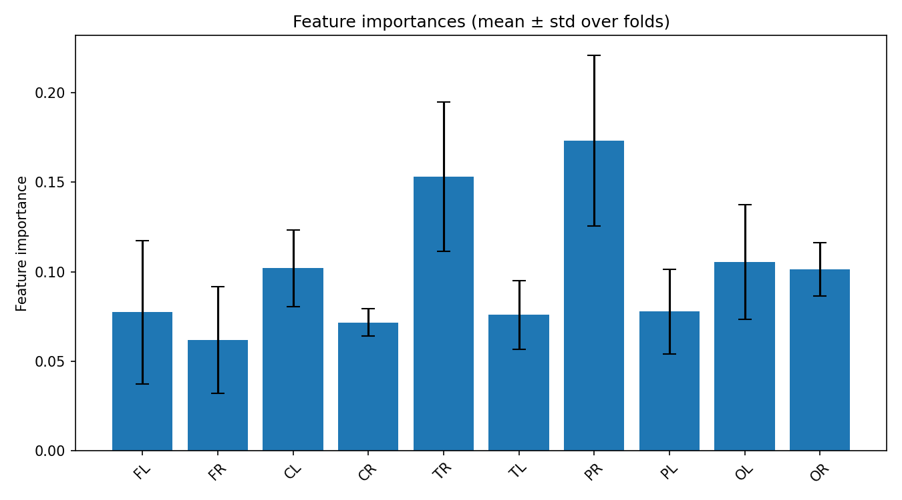
feature_importances_correlation_heatmap.png
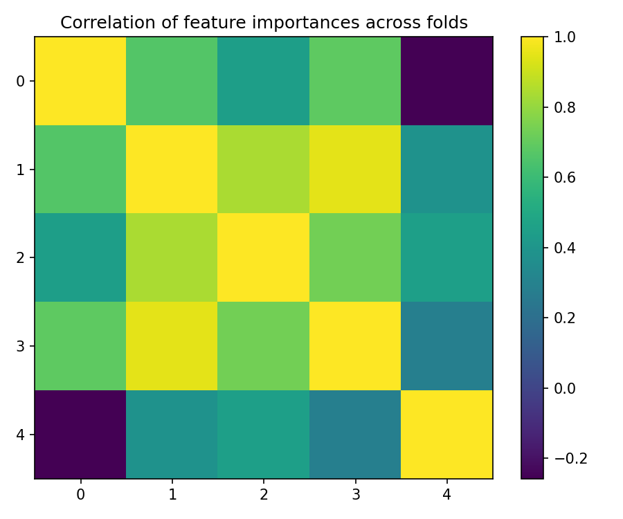
best_fold_2_feature_importances.png
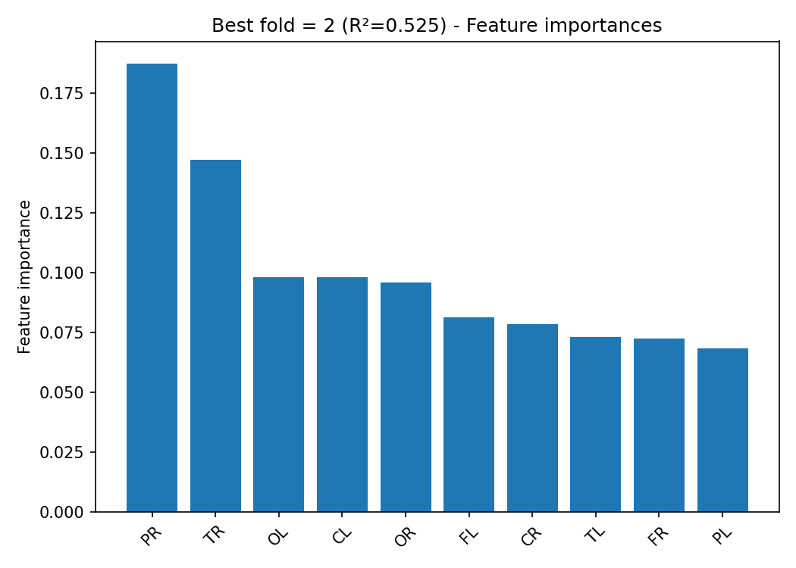
True vs Predicted Scatter Plots (by fold)
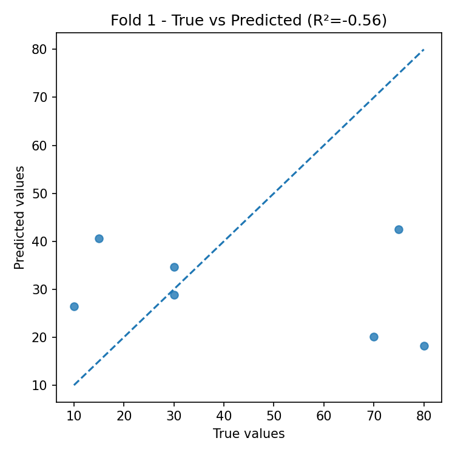
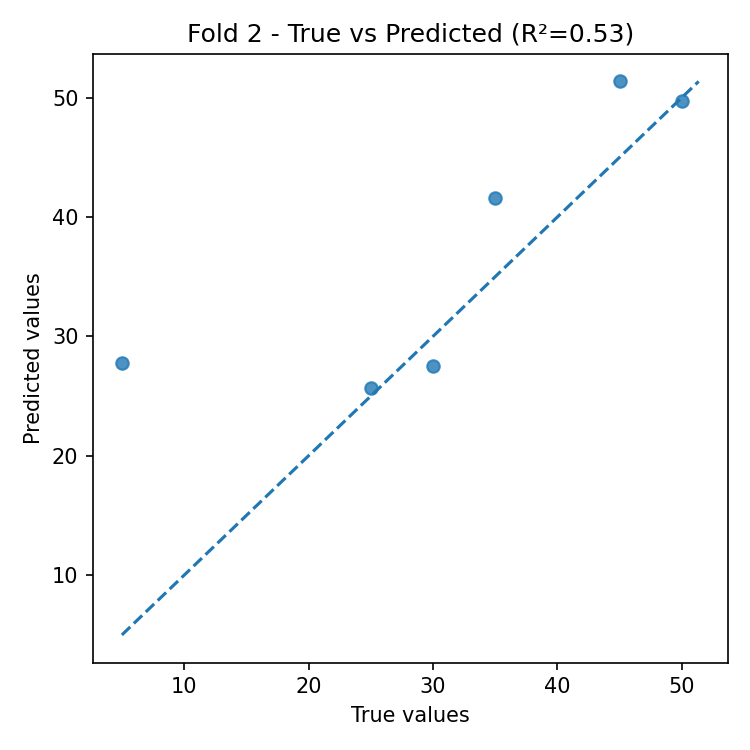
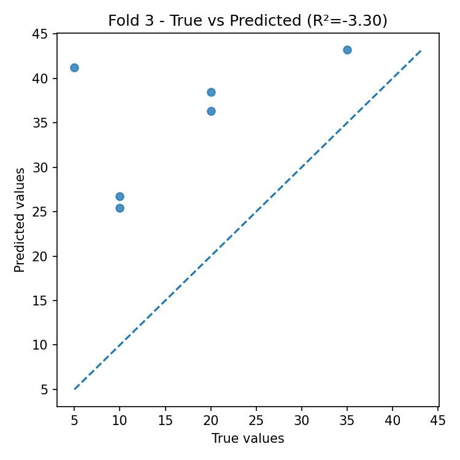
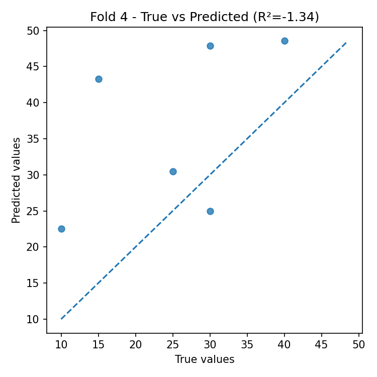
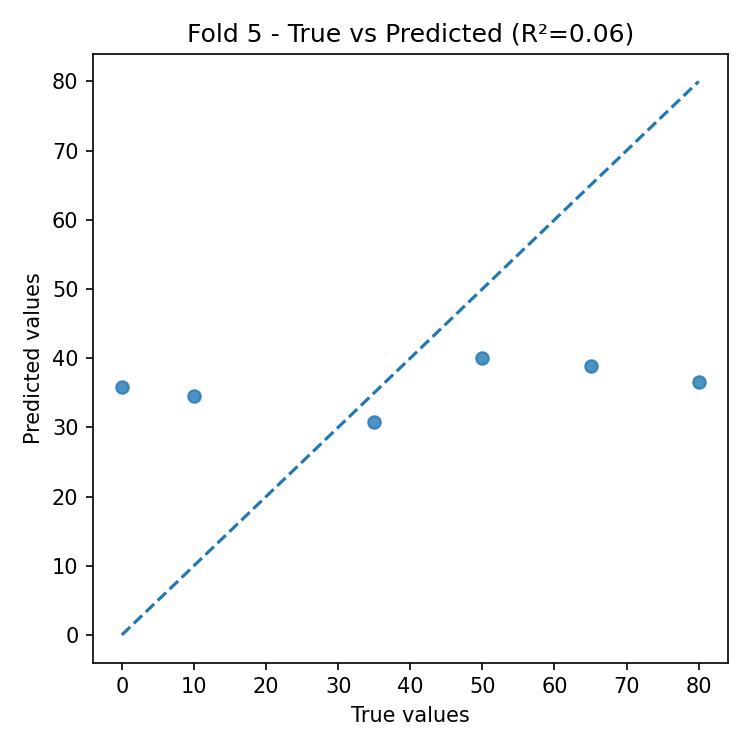
Residual Plots (by fold)
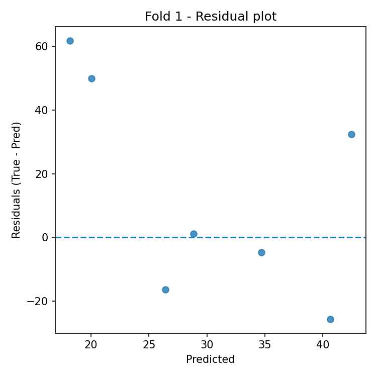
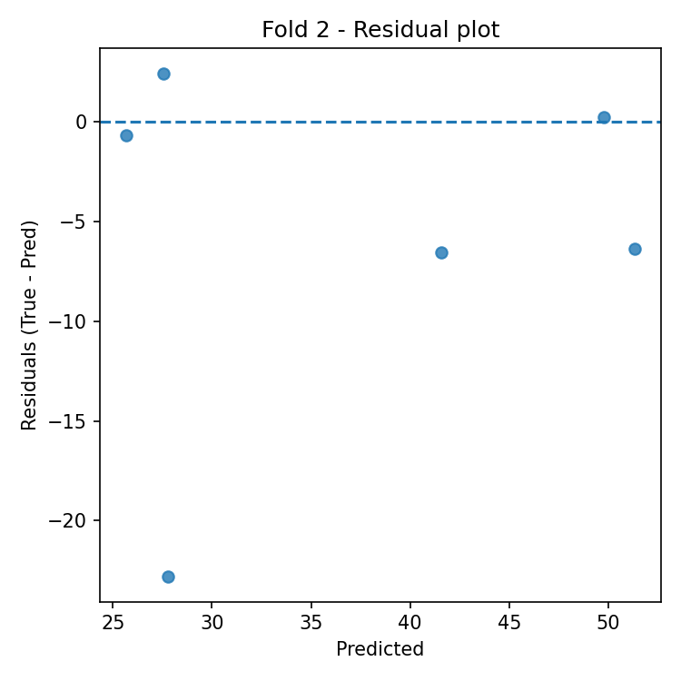
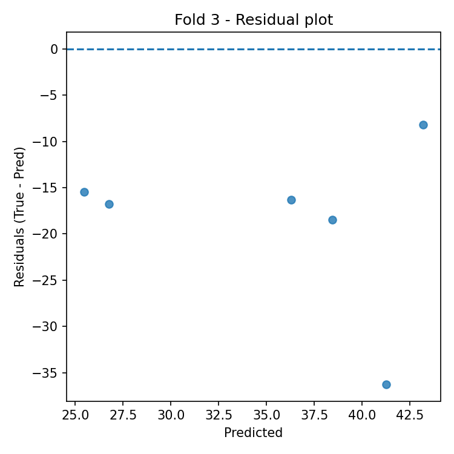
 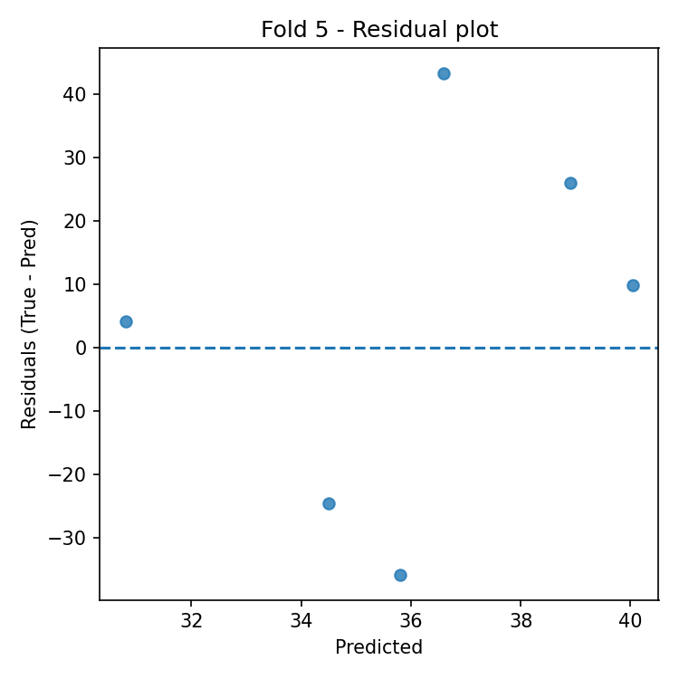
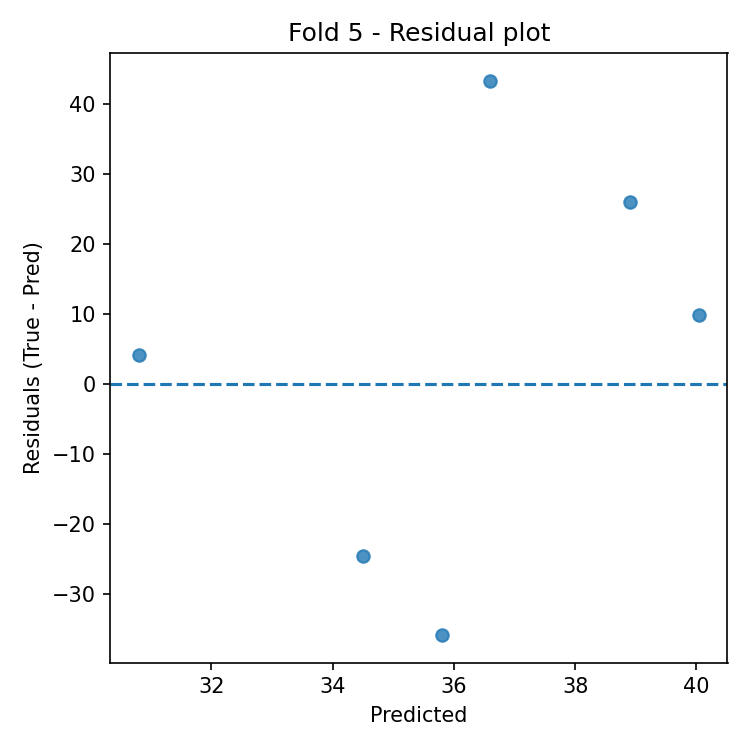
Automatic Interpretation
Overall Performance
- Mean R² across folds: -0.924 (± 1.500).
- Average error: RMSE = 21.578, MAE = 17.896 (same unit as target variable).
Model Stability
- R² variability across folds is high (std = 1.500).
- Average feature importance stability across folds: 0.028 (lower = more stable).
Most Important Features (average across all folds)
- Top-3: PR (0.173), TR (0.153), OL (0.105).
Best Fold
- Best fold: 2 with R² = 0.525.
- In the best fold, the most important features are: PR (0.187), TR (0.147), OL (0.098).
Residual Analysis (best fold)
- Residuals–predictions correlation: 0.158 (0 ≈ absence of linear bias).
- |Residuals|–predictions correlation: -0.256 (positive values indicate possible heteroscedasticity).
- Outliers (|res| > 3·std): 0.